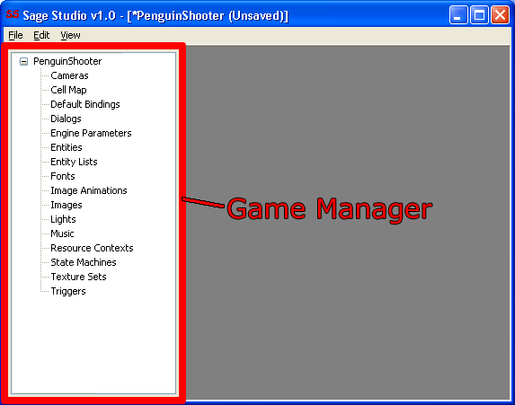
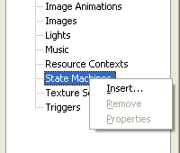
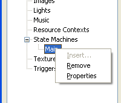
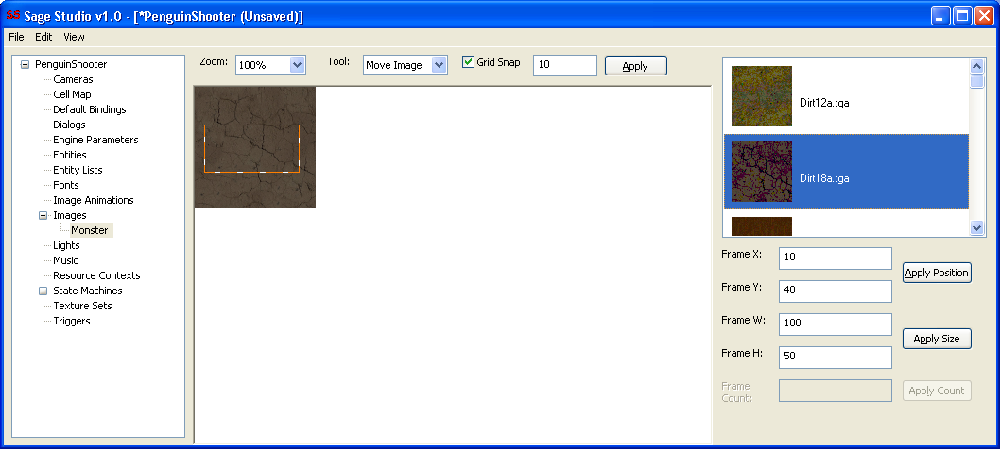
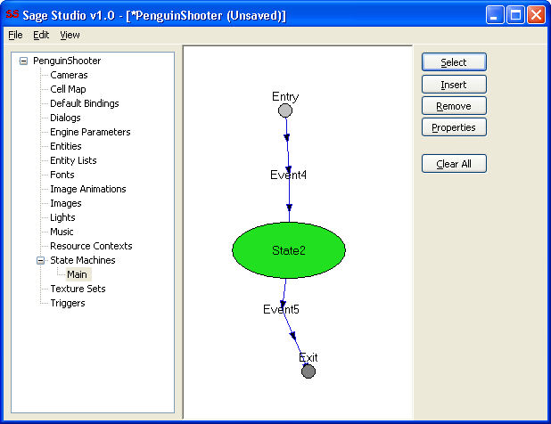

Managing your game means inserting, editing and removing items from the tree view dialog bar that's permanently docked to the left side of main window. This docked dialog bar is called the Game Manager.

Right click any of the tree items to display a context menu containing items applicable to which item you clicked on.
| Right clicking on the root node will allow you to change the Game's properties. |
|  | Right clicking any child item of the root node allows you to insert a new item. |
|  | Right clicking an inserted item allows you to remove or edit it. |
SageStudio's main view is context sensitive; what the editor shows in its main view is determined by what you have selected in the Game Manager. A few examples follow to demonstrate this.
Selecting an inserted Image in the Game Manager displays the Image Editor in the main view.

Selecting an inserted Resource Context in the Game Manager displays the Resource Context Editor in the main view.

Selecting an inserted State Machine in the Game Manager displays the State Machine Editor in the main view.

I recommend you read Basic Map Creation next.
Back to the Index